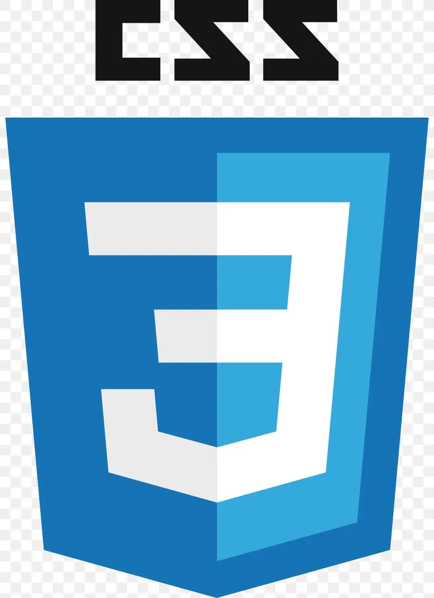
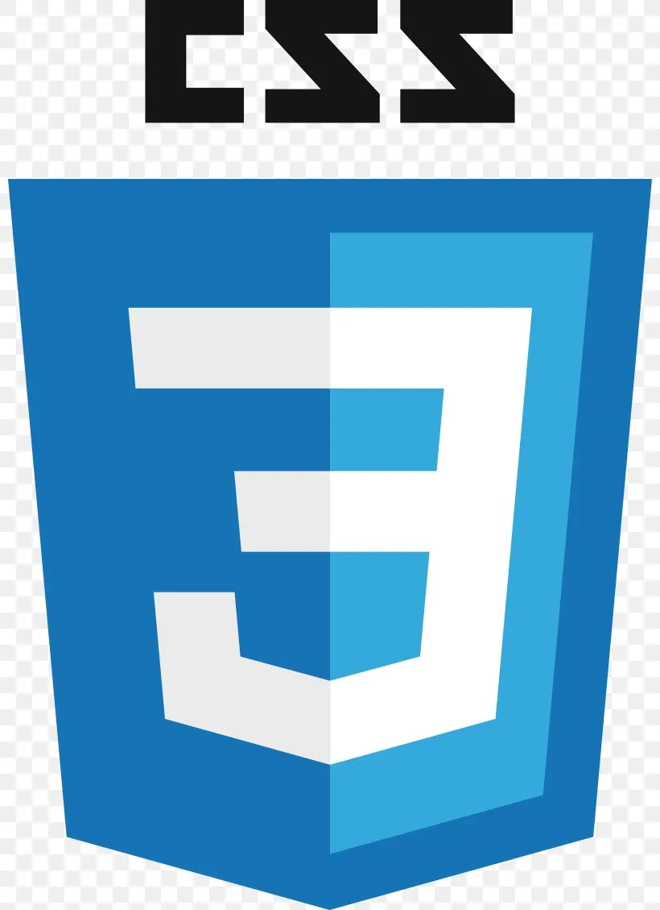

ANTHONY CHAMBON
Développeur Back-end PHP Symphony
-
Technicien itinerant
Toyota Material Handling France Avignon
janv 2018Technicien itinérant en charge de la maintenance préventive et curative (hydraulique,électrique,électronique et mécanique),principalement sur du matériel TOYOTA et BT , à énergie thermique ou électrique ( dominante). Responsable du diagnostic, de la recherche pièces. Rédaction des rapports d'intervention ,des devis. Recherche de différentes solutions ,en fonction des besoins du client,et en respectant la réglementation.Application des mises à jour logiciel ou matériel du constructeur. Gestion du stock de pièces détachées et des consommables avec réapprovisionement automatique.
-
Technicien itinerant
Richard Manutention
Dijon
sept 2012 à sept 2017
Technicien itinérant (sur le secteur de la Côte d'Or et du Jura) en maintenance préventive et curative (hydraulique,électrique,électronique et mécanique),principalement sur du matériel TOYOTA et BT et à énergie thermique ou électrique,avec une dominante pour cette dernière. Gestion du stock de pièces détachées et des consommables dans le véhicule.
-
Commercial SMBP
Chartres
sept 2010 à sept 2012
Clients particuliers, artisans et grands comptes, devis et réponses aux demandes de prix,mise en place d’un plan de prospection et d’une politique prix, réponses aux entreprises en fonction des CCTP,relance clients et gestion des impayés.Gestion du personnel de la centrale (un chauffeur et un centralier), et du matériel, rendez vous avec les fournisseurs et achats de matériels (de quelques € à 250 000 €).Depuis mon arrivée (création de poste), le volume de vente a été multiplié par 1.8.
-
Centralier
Chartres Orléans
juillet 2007 aout 2010
Chef de centrale à béton, vente directe aux clients et production selon les consignes du planning, gestion du parc de véhicules ,des chauffeurs(jusqu'à 10 personnes) et des approvisionnements, contacts fréquents avec les fournisseurs
-
SNCF
Persan Beaumont
dec 2005 à juill 2007
Formation interne pour devenir conducteur de train en banlieue parisienne.
-
Sous Officier Armée de l’Air
Dijon
mars 1999 à déc 2005
Mécanicien véhicules (VL, Pl, Véhicules spéciaux)
• Encadrement de recrues (7 semaines en 2001)
• Encadrement de détenus en fin de peine (4 mois en 2003)
• Aides publiques en métropole (Vigipirate, tempêtes de 1999 …)
• Gestion de crises lors d’incidents dans le secteur civil. -
« Job d été»
Clermont-Ferrand
juin 1992 à aout 1998
saisonnier : dans les champs et en scierie de 1995 à 1998(juillet et août), au journal "La Montagne" dans le service de maintenance
-
octobre 2022-
Afpa Avignon
Formation Développeur Web et Web Mobile niveau5(BTS/DUT)
-
2012-2022
Toyota Material Handling Fr
Formation continue sur le matériel TOYOTA et BT,Caces et diverses habilitations (électrique,travail en hauteur...).
-
03/1999-03/2000
Armée de l'Air
Formation militaire initiale et équivalence Bep véhicule auto et poids lourds.
-
09/1997-03/1999
Etude supérieures à Clermont-Ferrand
Math sup TSI puis première année d'IUT en maintenance industrielle .
-
1997
Baccalauréat
Bac Science et Technique de l'Industrie,Génie Mécanique Option A productique.
-
COORDONNEES :
- 39 Chemin de Crillon 84330 Caromb
-
 acdf-ac.ccdf@hotmail.fr
acdf-ac.ccdf@hotmail.fr
-
 +33
7.81.88.49.92
+33
7.81.88.49.92
- linkedin.com/in/anthony-chambon-9a7a9394/
-
 github.com/anth1309
github.com/anth1309
- BD particuliérement le genre historique
- Modélisme ,conception,modélisation et programmation
- Equitation , mountain trail et rando pleine nature
CENTRES D'INTERETS :
-
COMPETENCES :
-
 


-
PROFIL PERSONNEL
Anthony 46 ans,autonome et enthousiaste, mes premières expériences m'ont permis de renforcer mes acquis. En quête de nouveaux défis, je souhaite rejoindre une organisation au sein de laquelle je pourrais apporter mon dynamisme et mon goût du challenge.
- Organisation
- Communication
- Travail en équipe
- Autonomie
SOFT SKILLS